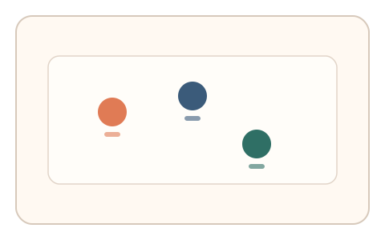
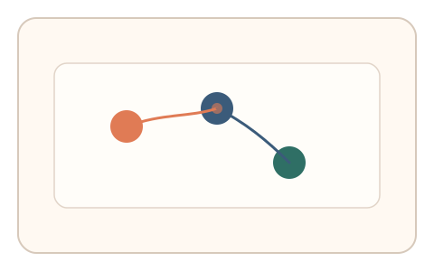

#94
Morphological Analysis - Combination Batches
已扩展
随机摩擦点刺
多个目标点带不同摩擦系数，用户快速点击，系统观察适应曲线与停顿分布判定真实性。
概念原文
2–3 个目标点各自带不同摩擦系数，用户快速点击，系统观察适应曲线与停顿分布并做异常检测。任务结构为短序列，信号形态为轨迹动力学与反应时。
通过“非均匀摩擦适应”区分程序轨迹。
研究背景
在非均匀摩擦或阻力环境中，人类会表现出可测的适应与回调策略。脚本难以在短序列中体现自然的摩擦适应曲线。
核心机制
- 呈现 2–3 个具有不同摩擦系数的目标点。
- 用户快速点击目标完成短序列。
- 记录到达时间、停顿与速度变化。
- 分析适应曲线与停顿分布。
用户流程
- 步骤 1：用户看到多个目标点。
- 步骤 2：依次快速点击各目标。
- 步骤 3：系统分析适应曲线并判定。
判定信号
速度变化与适应曲线
人类对摩擦差异会出现渐进调整。
停顿分布
真实用户会在高摩擦点短暂停顿。
判定逻辑
适应曲线需符合人类分布，停顿与速度变化合理；过度一致或无适应判异常。
对抗面
- 脚本忽略摩擦差异并固定速度
- 重放真实用户的点击序列
防御与缓解
- 随机化摩擦系数与目标位置
- 引入轻微扰动降低模板化
- 叠加轨迹微抖动与反应时信号
可达性与风险
提供慢速模式与更大目标，避免对手部障碍用户造成负担。
- 设备差异导致摩擦感受不一致
- 触控设备难以体现摩擦变化
可视化状态

状态 1：摩擦目标
目标点带不同摩擦标记。

状态 2：快速点击
用户在不同摩擦点间切换。

状态 3：适应判定
依据适应曲线与停顿判定。
参考资料
Motor adaptation
说明对阻力变化的运动适应机制。
Haptic perception
说明触觉反馈与摩擦感知基础。